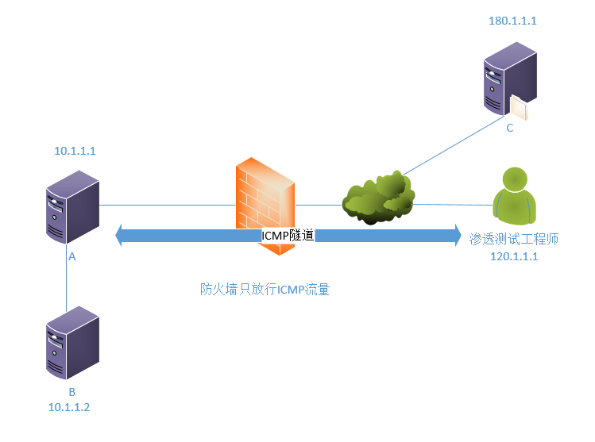
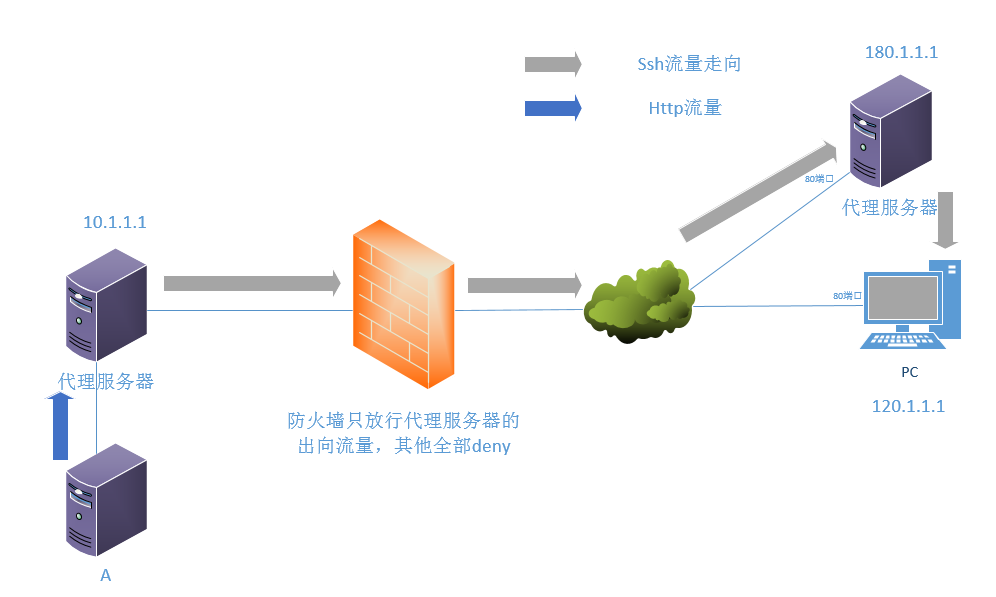
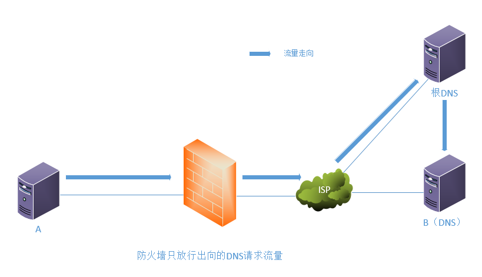

一、ICMP隧道
背景：已经通过某种手段拿到了园区网A主机的控制权，但是边界防火墙只放行该主机向外的ICMP流量，此时怎样才能让A主机和公网主机C建立TCP连接呢？
方案：将TCP包内容包裹在ICMP中进行传递
工具： ptunnel
工作原理：A主机通过周期性向渗透测试工程师发送ICMP请求以建立ICMP连接。在本地侦听一个空闲端口并与指定IP的指定端口(C主机)建立映射。此时访问侦听的这个端口就相当于访问公网指定IP的指定端口了(C主机)

隧道建立命令：
渗透测试工程师端（开启这个程序后本地不会侦听任何端口，因为它用的是ICMP，既不属于TCP也不属于UDP）：
ptunnel -x passwd
参数说明：
-x：密码
A主机端：
ptunnel -p 120.1.1.1 -lp 8000 -da 180.1.1.1 -dp 80 -x passwd
参数说明：
-p：渗透测试工程师IP地址
-lp：本地侦听端口
-da：C主机
-dp：C主机端口
-x：密码
验证：此时在A主机将侦听8000端口，A、B主机此时连接A主机8000端口的TCP流量均被导入C主机的80端口
缺点：唯一的缺点是运行此程序需要root权限
提醒：如果觉得每个隧道只能映射一个公网地址有局限性，可以配合SSH动态端口使用。通过此方法建立ICMP隧道后，再在此隧道内建立一条SSH动态端口转发隧道就可以访问公网任意地址了
二、http隧道
背景：已经通过某种手段拿到了园区网内A主机的控制权，但是边界防火墙只放行代理服务器的出向流量，可是又想用A主机与外面的PC建立ssh连接时该怎么办？
方案：让http代理服务器代替A主机与PC建立ssh连接
工作原理：在本地侦听一个空闲端口，并将PC的22端口映射至该侦听端口，然后将通往PC22端口的流量包裹进代理服务器的http包中，代理服务器将代替A主机与PC建立ssh连接，然后将回包通过http反还给A主机。此时园区网内所有设备只要sshA主机侦听的端口，流量就会被导入PC的22端口。(另外该方案还支持代理链，即通过代理服务器连接至外网的某一代理服务器，再通过该代理服务器与PC建立ssh连接)

隧道建立命令：
proxytunnel -a 2222 -p 10.1.1.1:3128 -r 180.1.1.1:80 -d 120.1.1.1:22
-a:本地侦听端口
-p: 本地官方的代理服务器
-r: 墙外的代理服务器
-d: 最终要访问的目标
验证：A主机将在0.0.0.0侦听2222端口，此时园区网内任意一主机ssh主机A的2222端口都将连到PC的22端口
三、UDP隧道
背景：通过某种手段拿到了园区网A主机的控制权，却发现边界防火墙只放行向外的DNS请求流量，此时想要ssh公网上的B主机该怎么办？
方案：将ssh流量包裹在DNS请求报文中
工作原理：搭建一个DNS服务器(B主机)，申请域名，并确保上级DNS服务器能将该域名解析至自己的DNS服务器。A主机向公网发出DNS请求(因为A记录长度有限，故可以请求txt这种记录，请求的txt内容就为ssh流量)，经过根DNS将流量解析至自己的DNS服务器（B主机），这样公网的主机B就收到了A主机发来的ssh协商请求，然后B主机通过将协商内容写入DNS应答包返回给主机A，这样一来一回就达成了建立ssh连接的网络环境。

由于这种隧道搭建需要一定成本(要让根DNS解析至自己主机)，所以就没有做实验验证了。
需要提醒一点：大家都知道DNS会用到UDP的53端口和TCP的53端口，但需要注意的是UDP的53端口是用来做DNS查询使用，TCP的53端口是用用于同一区域冗余DNS之间同步信息，并非这俩端口都是用来做DNS查询的，所以网络管理员一般在边界防火墙只需放开UDP的53端口即可。